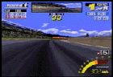
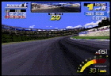
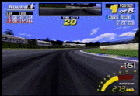

COUNTRY CIRCUIT
第１戦の攻略法

ピンク色の区間＝少しアクセルを抜くところ
［ ］内の数字＝安全に走る場合のシフトチェンジ
ピンク色の区間＝少しアクセルを抜くところ
［ ］内の数字＝安全に走る場合のシフトチェンジ
|  | 第１コーナー（右）
アクセルを踏みっぱなしでもベストのラインならぎりぎりコントロールできますが、
少しでも切り始めが遅いとコースアウトします。
踏みたい気持ちをぐっとこらえて、コーナー手前でほんの少しアクセルを抜きましょう。 |
|  | 第２コーナー（右）
車は必然的に左に寄っていますが、そこから強引にインへ切り込むと後輪が滑ってしまいます。 |
 |
第３コーナー（左）
フルアクセルの場合、インを狙いすぎると滑ってしまいます。
ここもねばるようなハンドリングでミドルからアウトをなぞります。 |
|  | 第４コーナー（右）
アウト側いっぱいから入り、微妙にアクセルを抜きつつ曲がります。 |
 |
第５（最終）コーナー（右）
早めにハンドルを切りだし、インぎりぎりをついたら戻し始める感じで加速しながら立ち上がっていくとベストです。 |

|

|